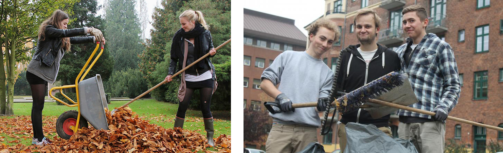
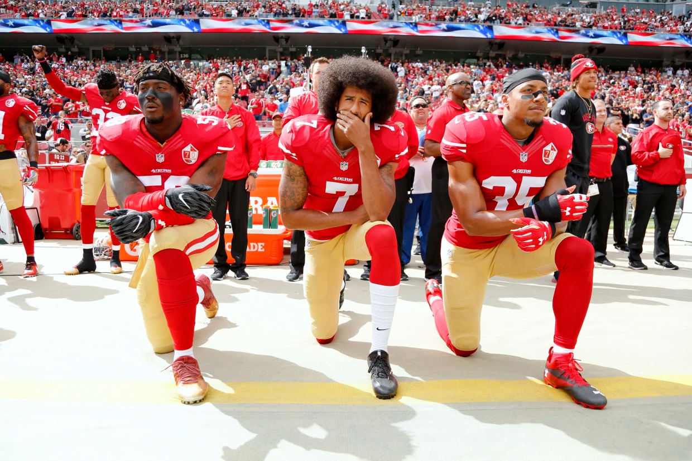
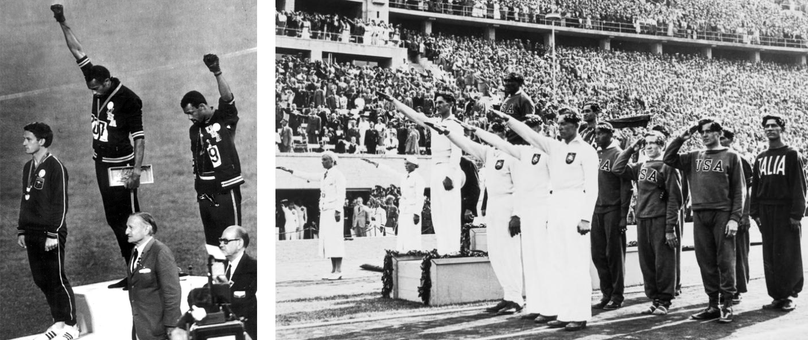

FP10 Dansk, skriftlig prøve
Del b
Modtagerrettet kommunikation
Læserbrev
Del c
Skriftlig fremstilling
1. Din indre nybegynder
2. Sport og politik
3. Et portræt af din generation
Du skal skrive den valgte opgaves nummer og titel på din besvarelse.
Modtagerrettet kommunikation
Læserbrev
Del c
Skriftlig fremstilling
1. Din indre nybegynder
2. Sport og politik
3. Et portræt af din generation
Du skal skrive den valgte opgaves nummer og titel på din besvarelse.
Onsdag den 7. december 2022
Kl. 09.00-13.00
Samlet prøvetid for del a, b og c er 4 timer
Før du skriver
Til eleven
Til denne prøve i skriftlig fremstilling har du adgang til internettet.
Du må ikke kommunikere eller dele dine dokumenter med andre under prøven.
Hvis du i din tekst anvender informationer, citater, billeder, ressourcer fra internettet eller fra andre steder, skal du angive kilderne sidst i besvarelsen. Hvis du anvender kilder fra prøveoplægget, behøver du ikke at angive dem i din tekst.
Din tekst vurderes på, hvor godt du udfolder de tre vurderingsdimensioner funktion, indhold og form på en sammenhængende og meningsfuld måde i din tekst.
Du vurderes efter de samme vurderingskriterier i b- og c-delen.
Se vurderingskriterierne nedenfor.
God arbejdslyst!
Vurderingskriterier til eleven
Der gives én karakter baseret på en helhedsvurdering af de tre dimensioner funktion, indhold og form.
| Vurderingsdimension | Vurderingsområde | Vurderingsspørgsmål |
| Funktion | Skrivesituation | I hvilken grad fungerer din tekst i den skrivesituation, som opgaven beskriver? |
| Opgavens krav | I hvilken grad opfylder du opgavens krav til afsender, modtager og fremstillingsformer? | |
| Indhold | Mening | I hvilken grad udtrykker din tekst et meningsfuldt indhold med omverdensforståelse og refleksion? |
| Ressourcer | I hvilken grad bruger du opgaveforlægget, din egen faglige viden og internettet i din tekst? | |
| Form | Tekstsammenhæng | I hvilken grad hænger din tekst sammen sprogligt, og er der velvalgte afsnit og modaliteter? |
| Skrift og andre modaliteter | I hvilken grad bruger du tegnsætning, tekstbehandlingsprogrammets funktioner og ord, så det understøtter den situation, teksten skal bruges i? |
b Modtagerrettet kommunikation
Annoncetekst til et socialt medie

| Foto: Operation Dagsværk. Kilde: oxfamibis.dk | Foto: Operation Dagsværk. Kilde: od.dk |
Din klasse skal samle penge til den årlige studietur. Derfor har I besluttet at tilbyde klassens arbejdskraft i en weekend.
På vegne af klassen skriver du annonceteksten, der skal slås op på et socialt medie.
I din annoncetekst skal du:
|
c Skriftlig fremstilling
Du skal vælge en af disse opgaver:
2. Sport og politik 3. Et portræt af din generation |
1. Din indre nybegynder
Se filmen Bliv en bedre nybegynder:
På din skole skal I holde velkomstaften for de kommende 10. klasseelever. Din skole lægger vægt på nysgerrighed, åbenhed og viljen til at lære nyt. Jo mere vi øver os i at lære noget nyt og møde nye udfordringer, jo mere kan vi få vi ud af den store, uforudsigelige fremtid, vi står overfor.
Du skal holde talen til velkomstsaftenen.
|
Skriv teksten til din velkomsttale. Brug filmen som inspiration til din tekst.
I din tekst skal du:
|
2. Sport og politik

| Foto: John G. Mabanglo/EPA. Kilde: nbcnews.com |

| Foto: information.dk | Foto: information.dk |
| Foto: Frank Hoermann. Kilde: information.dk | Foto: Daniel Niehbuhr. Kilde: dr.dk |
Nogle mener, at sport og politik ikke hører sammen. Andre mener, at sport er politik. Igennem tiden har der været mange eksempler på, at enkeltpersoner, organisationer eller hele nationer har brugt sporten til at fremme deres politiske synspunkter.
Du har fulgt debatten og vælger at bidrage med dine synspunkter om sport og politik på din blog.
| Skriv dit blogindlæg.
Som forberedelse skal du søge eksempler, hvor sport er blevet brugt politisk. Desuden skal du undersøge andre debattørers og atleters holdninger til emnet. Du skal inddrage disse holdninger i din tekst. I dit blogindlæg skal du:
|
3. Et portræt af din generation
Center for Fremtidsforskning vil udgive en bog, der først skal publiceres om 50 år. Til bogen efterlyses tekster, der portrætterer din generation.
De tekster, der giver de bedste og mest rammende beskrivelser, vil derved blive gemt for eftertiden. Du vælger at bidrage med et portræt af din generation.
Se filmen Oversigt over alle 6 generationer af Emilia Van Hauen:
|
Skriv portrættet af din generation.
Som forberedelse og inspiration skal du se videoen Oversigt over alle 6 generationer af Emilia Van Hauen. Desuden skal du søge yderligere oplysninger om din generation, som kaldes Generation Z, og bruge dem i din tekst. I din tekst skal du:
|